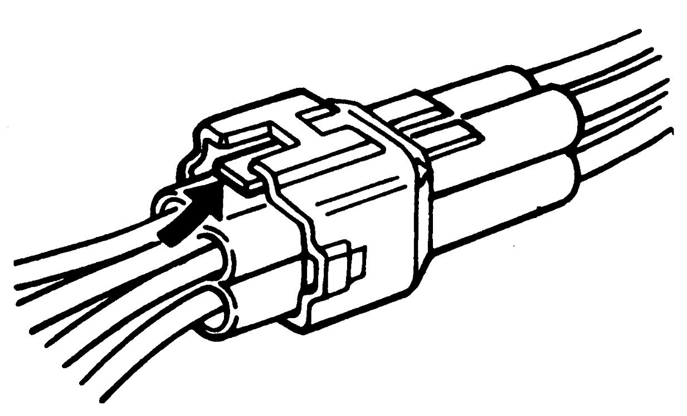
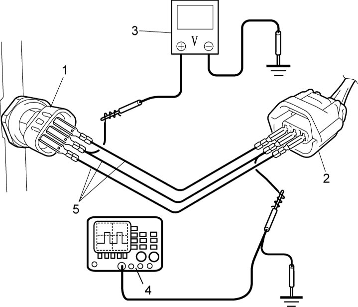

1
| Precautions for Engine (M16A) |
Warning for Air Bag
Refer to Warning for Air Bag.
Precautions for Fuel System Service
Refer to Precautions for Fuel System Service:M16A.
Precautions for Catalytic Converter
Precautions for Electrical Circuit Service
Reassembling Note for Wiring Harness
Observe Reassembling Note for Wiring Harness whenever installing wiring harness.
Otherwise, electrical trouble may occur.
Precautions for Engine Service
•If a jack is applied to the oil pan when raising or supporting the engine, the oil pan could be deformed or broken.
Always use a chain hoist to support the engine by attaching the chain to the hooks on the engine.
•If the 12 V electrical system is shorted while servicing the engine, the engine electrical circuits could be damaged seriously.
When the intended service operation does not require electric power supply from the battery, disconnect the negative (–) cable at the battery before starting the service work.
•If foreign material has entered the engine during removal of intake system components, internal parts of the engine could be severely damaged when the engine is started.
Suitably cover the air intake port when the air cleaner, throttle body, intake manifold or other intake system component is removed.
•When disconnecting connectors, do not pull wire harness but make sure to hold connector itself. With lock type connector, be sure to unlock before disconnection.
Attempt to disconnect connector without unlocking may result in damage to connector. When connecting lock type connector, insert it till clicking sound is heard and connect it securely.

Always use a chain hoist to support the engine by attaching the chain to the hooks on the engine.
•If the 12 V electrical system is shorted while servicing the engine, the engine electrical circuits could be damaged seriously.
When the intended service operation does not require electric power supply from the battery, disconnect the negative (–) cable at the battery before starting the service work.
•If foreign material has entered the engine during removal of intake system components, internal parts of the engine could be severely damaged when the engine is started.
Suitably cover the air intake port when the air cleaner, throttle body, intake manifold or other intake system component is removed.
•When disconnecting connectors, do not pull wire harness but make sure to hold connector itself. With lock type connector, be sure to unlock before disconnection.
Attempt to disconnect connector without unlocking may result in damage to connector. When connecting lock type connector, insert it till clicking sound is heard and connect it securely.

 "Expand image")
Precautions for Diagnosing Trouble
NOTE:
•There are five types of OBD system on ECM depending on the vehicle specification. For identification, refer to OBD System Description:M16A.
•There are two types of OBD system on TCM depending on the vehicle specification. For identification, refer to OBD System Description.
•There are two types of OBD system on TCM depending on the vehicle specification. For identification, refer to OBD System Description.
Diagnostic information stored in ECM memory can be cleared as well as checked using SUZUKI scan tool or CAN communication OBD-II generic scan tool on type A, C, D and E OBD system. Before using scan tool, read its Operator’s Manual to know how to use it.
•Not only ECM but also TCM (type A-A/T model in Section 5A) turns on MIL. It is indistinguishable which module turns on MIL.
Therefore, for type A-A/T model in Section 5A, check both ECM and TCM for DTC when MIL lights up.
•Priorities for diagnosing troubles:
If two or more DTCs are stored, perform DTC troubleshooting for these DTCs beginning with the DTC detected earliest while following the instructions if given in the troubleshooting procedure.
If no instructions are given, troubleshoot DTCs according to the following priorities.
Therefore, for type A-A/T model in Section 5A, check both ECM and TCM for DTC when MIL lights up.
•Priorities for diagnosing troubles:
If two or more DTCs are stored, perform DTC troubleshooting for these DTCs beginning with the DTC detected earliest while following the instructions if given in the troubleshooting procedure.
If no instructions are given, troubleshoot DTCs according to the following priorities.
a.DTCs other than DTC P0171 / P0172 (Fuel system too lean / too rich) and DTC P0300 / P0301 / P0302 / P0303 / P0304 (Misfire detected)
b.DTC P0171 / P0172 (Fuel system too lean / too rich)
c.DTC P0300 / P0301 / P0302 / P0303 / P0304 (Misfire detected)
b.DTC P0171 / P0172 (Fuel system too lean / too rich)
c.DTC P0300 / P0301 / P0302 / P0303 / P0304 (Misfire detected)
•Read Precautions for Electrical Circuit Service before inspection and observe what is written there.
•Communication of ECM and other control module is established by CAN. (For more detail of CAN communication for ECM, refer to CAN Communication System Diagnosis General Description:M16A Model).
•Before performing troubleshooting, read Precautions for ECM Circuit Inspection.
•Upon completion of inspection and repair work, perform “DTC Confirmation Procedure” and check that the trouble has been repaired.
•Communication of ECM and other control module is established by CAN. (For more detail of CAN communication for ECM, refer to CAN Communication System Diagnosis General Description:M16A Model).
•Before performing troubleshooting, read Precautions for ECM Circuit Inspection.
•Upon completion of inspection and repair work, perform “DTC Confirmation Procedure” and check that the trouble has been repaired.
Precautions for Replacing ECM
•ECM must be replaced with new one. Before replacement of the ECM, check the following conditions. Neglecting this check may cause damage to new ECM.
—Resistances of all relays and actuators are as specified.
—TP sensor, APP sensor, MAP sensor and A/C refrigerant pressure sensor (A/C model) are in good condition and none of their power circuits is shorted to ground.
—TP sensor, APP sensor, MAP sensor and A/C refrigerant pressure sensor (A/C model) are in good condition and none of their power circuits is shorted to ground.
Precautions for ECM Circuit Inspection
Do not measure circuit voltage and/or pulse signal of ECM by inserting tester probe into a sealed terminal of ECM.
When measuring circuit voltage and/or pulse signal of ECM, connect service wires (5) to terminals of each sensor / actuator (1) and sensor / actuator connector (2). Otherwise, sealed terminals, ECM and its circuits may be damaged.

 "Expand image")
| 3. | Voltmeter | 4. | Oscilloscope |
Precautions for Electric Throttle Control System Calibration
Completely closed and opened throttle valve position data are stored in ECM.
(For details of Electric Throttle Control System Calibration, refer to Description of Electric Throttle Control System Calibration:M16A.)
After performing any one of the following services, it is necessary to calibrate the completely closed and opened throttle valve positions stored in ECM. 
•Replacement of ECM
•Clearance of DTC related to electric throttle control system (P0607, P0122, P0123, P0222, P0223, P2100, P2101, P2119, P2122, P2123, P2127, P2128, P2135, P2138 or P2176)
•Replacement of electric throttle body assembly or accelerator pedal assembly with APP sensor
•Disconnecting negative (–) cable at battery
•Clearance of DTC related to electric throttle control system (P0607, P0122, P0123, P0222, P0223, P2100, P2101, P2119, P2122, P2123, P2127, P2128, P2135, P2138 or P2176)
•Replacement of electric throttle body assembly or accelerator pedal assembly with APP sensor
•Disconnecting negative (–) cable at battery
Precautions for Generator Control System
In connection with generating control of the generator, the engine speed may rise or drop due to such causal factors as described below.
•Battery is undercharged or its service life is used up.
•The power for later added accessories is taken directly from the battery terminal.
•A large amount of electric load is applied.
•There is an abnormality in the generator field monitor signal or in the current sensor signal when each of the following DTCs is detected.
•The power for later added accessories is taken directly from the battery terminal.
•A large amount of electric load is applied.
•There is an abnormality in the generator field monitor signal or in the current sensor signal when each of the following DTCs is detected.
—P0515: Battery Temperature Sensor Circuit
—P0A5A: Generator Current Sensor Circuit Range / Performance
—U2001: LIN Lost Communication With Generator
—U2021: LIN Invalid Data from ECM to Generator
—P0A5A: Generator Current Sensor Circuit Range / Performance
—U2001: LIN Lost Communication With Generator
—U2021: LIN Invalid Data from ECM to Generator